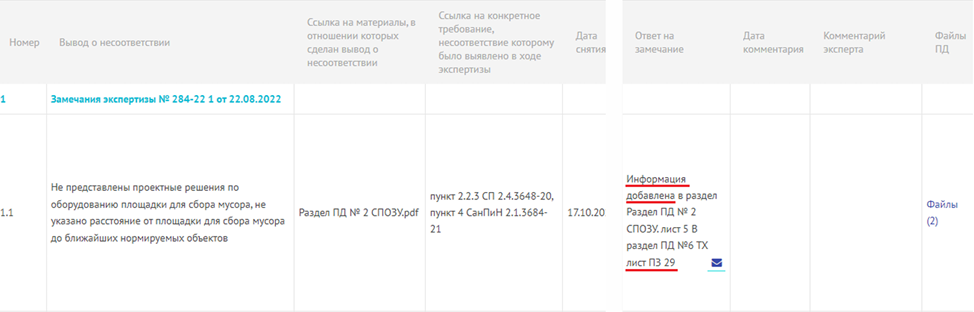

Ответы на замечания экспертизы: алгоритм и шаблоны

Экспертиза – это не враг, а контрольная точка, которая помогает сделать проект лучше.
В этом уроке мы с вами рассмотрим, как отвечать на замечания экспертизы. Я дам вам полезные советы, как бороться с необоснованными замечаниями.
Как показывает практика, большинство замечаний – формальные, а не технические. Их можно исправить быстро, если знать, как отвечать. Обычно они по оформлению или обоснованию расчетных значений.
Выделим несколько типов замечаний:
- Формальное
- Техническое
- Спорное
Пример ответа на замечание:

Рассмотрим наиболее часто встречающиеся замечания к документации:
- Использование неактуальных НТД
- Несоблюдение требований пожарной безопасности
- Отсутствие обоснований принятых решений в документации
- Несогласованность информации в разделах ПД
- Ошибки оформления
- Некорректные штампы
Обязательно в ответе на каждый выявленный недостаток, указанный в уведомлении, указывать раздел (подраздел, часть раздела, книгу, том) и лист проектной документации, куда были внесены изменения.
Никогда не пишите в ответах на замечания: «Вы ошиблись».
Пишите: «Просим уточнить» или «Представляем обоснование»
| Ситуации | Шаблоны фраз |
| Если замечание справедливо и принимается | «Замечание принято. Изменения внесены на листе ХХ. Просим снять.» |
| Если есть обоснование | «Решение принято на основании СП ХХХ, п. Х. Прилагаем расчёт. Просим оставить как есть.» |
| Если замечание не по делу | «Прошу уточнить нормативное основание для данного замечания.» |
Согласно пункту 13 приказа Минстроя от 08.06.2018 № 341/пр, если выявлены несоответствия, то в выводах должны быть указаны конкретные разделы проектной документации, требования нормативных актов или результаты инженерных изысканий, которым она не соответствует. Также необходимо указать дату, по состоянию на которую действовали требования, примененные при проведении экспертизы.
Вы можете ссылаться на этот пункт при получении необоснованного замечания от экспертизы.
При возможности обязательно общайтесь с экспертом, написавшим замечания.
Часто в бланке замечаний указан телефонный номер или почта исполнителя. Если замечания неконкретные и есть вопросы или требуют предоставления дополнительных материалов, старайтесь перед устранением замечаний позвонить эксперту и обсудить что именно и в каком виде он хочет получить. Вся процедура рассмотрения замечаний затяжная, поэтому очень важно с первой попытки понимать, что не так в проектной документации и устранять все замечания.
Проверочные карточки 1
Карточка 1

Определите, какая фраза лишняя в ответе на замечание: «Нет обоснования выбора материала труб»
- «На основании СП 30.13330.2020…»
- «Материал - сталь по ГОСТ 10704-91 …»
- «Прилагается гидравлический расчет, см. Приложение 2…»
- «Просим снять замечание»
- «Вы ошиблись»
Ответ и пояснение
Ответ в исходных данных: «Вы ошиблись»
Пояснение при правильном ответе: Не стоит писать «Вы ошиблись» эксперту, лучше приведите свое обоснование, эксперты тоже люди и могут что-то не заметить. Важно адекватно к этому относиться и не начинать ругаться.
Пояснение при ошибке: Не стоит писать «Вы ошиблись» эксперту, лучше приведите свое обоснование, эксперты тоже люди и могут что-то не заметить. Важно адекватно к этому относиться и не начинать ругаться.
. Источник и ограничения. Проверка ответов, анимация и серверные функции недоступны в статической копии.